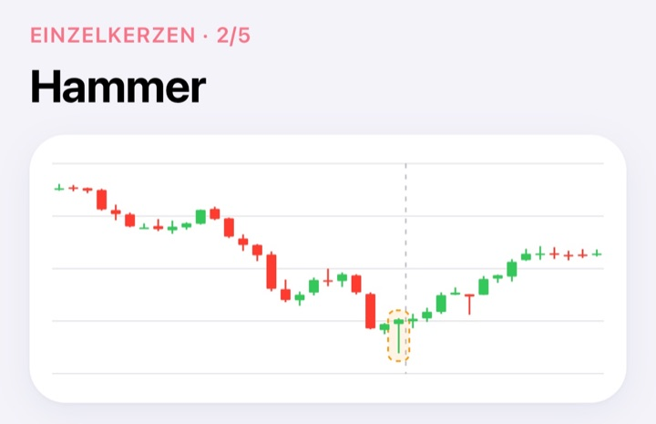
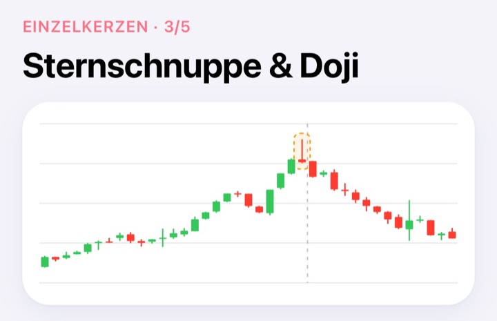

Charttechnik
Kerzenmuster für Anfänger: Die 8 wichtigsten Candlesticks
Eine einzelne Kerze erzählt, wie ein Handelstag verlief. Wer die wichtigsten Kerzenmuster kennt, erkennt Stimmungswechsel früher. Mit Bildern aus der App.
Kerzencharts, englisch Candlesticks, sind die beliebteste Art, Kurse darzustellen. Jede Kerze fasst einen Zeitraum zusammen, etwa einen Tag. Bestimmte Formen aus einer, zwei oder drei Kerzen tauchen immer wieder auf. Diese Kerzenmuster verraten, ob Käufer oder Verkäufer gerade die Oberhand gewinnen.
So liest du eine Kerze

- Körper: der Bereich zwischen Eröffnungs- und Schlusskurs. Grün (oder hell) heißt, der Kurs schloss höher, als er eröffnete. Rot (oder dunkel) heißt, er schloss tiefer.
- Dochte (auch Schatten): die Linien über und unter dem Körper. Sie zeigen das Hoch und das Tief des Zeitraums.
- Lange Dochte zeigen, dass der Kurs weit gelaufen ist und dann zurückgedrängt wurde.
Schritt für Schritt mit Beispiel erklärt der Artikel Kerzenchart lesen, wie du jede Kerze abliest.
Die 8 Muster im Überblick
| Muster | Kerzen | Signal | Wo es zählt |
|---|---|---|---|
| Hammer | 1 | bullisch | nach einem Abwärtstrend |
| Sternschnuppe | 1 | bärisch | nach einem Aufwärtstrend |
| Doji (mit Libelle und Grabstein) | 1 | Unentschlossenheit | an möglichen Wendepunkten |
| Engulfing | 2 | Umkehr | am Ende eines Trends |
| Harami | 2 | mögliche Umkehr, schwächer | am Ende eines Trends |
| Morgenstern | 3 | bullisch | nach einem Abwärtstrend |
| Abendstern | 3 | bärisch | nach einem Aufwärtstrend |
| Drei weiße Soldaten / drei schwarze Krähen | 3 | starke Bewegung | als Umkehr oder Bestätigung |
1. Hammer

Ein kleiner Körper am oberen Ende und ein langer unterer Docht, mindestens doppelt so lang wie der Körper. Der Kurs fiel während des Tages deutlich, doch Käufer drückten ihn bis zum Schluss fast wieder auf das Ausgangsniveau. Nach einem Abwärtstrend kann das eine Wende ankündigen. Bestätigt wird das Signal meist erst durch eine steigende Kerze am nächsten Tag. Die gleiche Form nach einem Aufwärtstrend heißt Hanging Man und gilt dort als Warnsignal. Ausführlich mit Rechenbeispiel: Hammer-Kerze.
2. Sternschnuppe und Doji

Die Sternschnuppe ist das Gegenstück zum Hammer: ein kleiner Körper unten, ein langer oberer Docht. Der Kurs stieg stark, doch Verkäufer drückten ihn zurück. Nach einem Aufwärtstrend ist das ein Warnsignal.
Beim Doji liegen Eröffnung und Schluss fast gleich auf, der Körper ist nur ein Strich. Käufer und Verkäufer halten sich die Waage. Nach einem langen Trend kann das nachlassende Kraft anzeigen. Alle Doji-Arten im Detail zeigt der Artikel Doji-Kerze.
3. Libelle und Grabstein

Zwei besondere Doji-Formen: Beim Libellen-Doji (Dragonfly) liegen Eröffnung und Schluss am Hoch, darunter ein langer Docht. Am Tief eines Abwärtstrends gilt das als mögliches Kaufsignal. Beim Grabstein-Doji (Gravestone) liegen Eröffnung und Schluss am Tief, darüber ein langer Docht. Am Hoch eines Aufwärtstrends gilt das als Warnsignal.
4. Engulfing

Beim Engulfing („Verschlucken“) umschließt der Körper der zweiten Kerze den Körper der ersten vollständig. Ein bullisches Engulfing entsteht nach einem Abwärtstrend: Auf eine kleine rote folgt eine große grüne Kerze. Ein bärisches Engulfing ist das Spiegelbild nach einem Aufwärtstrend. Je größer die zweite Kerze und je höher das Volumen, desto stärker das Signal.
5. Harami

Harami heißt auf Japanisch „schwanger“: Die zweite, kleine Kerze liegt vollständig im Körper der ersten, großen. Der Schwung des Trends lässt nach. Das Signal ist schwächer als ein Engulfing und braucht fast immer eine Bestätigung durch die folgenden Kerzen.
6. Morgenstern

Ein Dreier-Muster am Ende eines Abwärtstrends: Auf eine lange rote Kerze folgt eine kleine Kerze, oft mit einer Lücke nach unten, die Unentschlossenheit zeigt. Dann schließt eine lange grüne Kerze weit in den Körper der ersten hinein. Die Verkäufer verlieren die Kontrolle, die Käufer übernehmen.
7. Abendstern

Das Spiegelbild des Morgensterns am Ende eines Aufwärtstrends: lange grüne Kerze, kleine Kerze als Zögern, dann eine lange rote Kerze, die tief in den Körper der ersten fällt. Ein klassisches Warnsignal, besonders an einem Widerstand.
8. Drei weiße Soldaten und drei schwarze Krähen

Drei weiße Soldaten sind drei lange grüne Kerzen in Folge, jede schließt höher als die vorige und eröffnet innerhalb des vorherigen Körpers. Das zeigt anhaltenden Kaufdruck. Drei schwarze Krähen sind das Gegenstück mit drei langen roten Kerzen und deuten auf anhaltenden Verkaufsdruck hin.
Typische Fehler beim Erkennen
- Ohne Zusammenhang handeln: Ein Hammer mitten in einer Seitwärtsphase sagt wenig. Wichtig ist, wo im Trend das Muster steht.
- Nicht auf Bestätigung warten: Viele Muster gelten erst, wenn die nächste Kerze in die erwartete Richtung läuft.
- Zu kleine Zeiteinheiten: Im Minutenchart entstehen Muster ständig und sind oft Zufall. Tages- und Wochenkerzen sind aussagekräftiger.
- Volumen ignorieren: Ein Umkehrmuster mit hohem Volumen ist glaubwürdiger als eines ohne.
- Kein Plan fürs Risiko: Auch das schönste Muster kann scheitern. Stop und Positionsgröße gehören dazu, siehe Chance-Risiko-Verhältnis.
Kerzenmuster und Chartmuster
Kerzenmuster zeigen die Stimmung weniger Tage, Chartmuster wie Schulter-Kopf-Schulter oder Flaggen die Entwicklung über Wochen. Am stärksten sind Signale, wenn beides zusammenpasst: etwa ein Hammer an der Unterstützung eines Doppelbodens. Die wichtigsten Formationen erklärt der Artikel Chartmuster.
Kerzenmuster üben
Muster prägen sich ein, wenn du sie oft siehst. In InQuestly erklärt die Gratis-Lektion „Kerzen lesen“ im Kurs Charttechnik den Aufbau einer Kerze. Alle hier gezeigten Muster behandelt der Kurs „Kerzenmuster“ mit InQuestly Pro. Im Gratis-Spiel „Bulle oder Bär?“ übst du Formationen und Kerzen per Wischen, mit Erklärung nach jeder Runde.
Häufige Fragen
Welches Kerzenmuster ist das zuverlässigste?
Keines funktioniert für sich allein zuverlässig. Aussagekräftiger werden Muster an wichtigen Zonen, mit hohem Volumen und mit Bestätigung durch die nächste Kerze.
Was bedeutet ein Doji?
Eröffnungs- und Schlusskurs liegen fast gleich auf. Käufer und Verkäufer halten sich die Waage. Nach einem starken Trend kann das auf nachlassende Kraft hindeuten.
Was ist der Unterschied zwischen Hammer und Hanging Man?
Beide sehen gleich aus: kleiner Körper oben, langer unterer Docht. Der Hammer erscheint nach einem Abwärtstrend und gilt als bullisch, der Hanging Man nach einem Aufwärtstrend und gilt als Warnsignal.
Was sind bullische Kerzenmuster?
Muster, die auf steigende Kurse hindeuten, etwa Hammer, bullisches Engulfing, Morgenstern oder drei weiße Soldaten.
Was sind bärische Kerzenmuster?
Muster, die auf fallende Kurse hindeuten, etwa Sternschnuppe, bärisches Engulfing, Abendstern oder drei schwarze Krähen.
Gelten Kerzenmuster auch für Kryptowährungen und ETFs?
Ja, Kerzencharts gibt es für alle frei gehandelten Märkte. Bei Kryptowährungen ohne festen Handelsschluss hängt die Tageskerze von der gewählten Zeitzone ab.
Dieser Artikel dient der Bildung und ist keine Anlageberatung. Beispiele sind vereinfacht und ohne Steuern dargestellt.